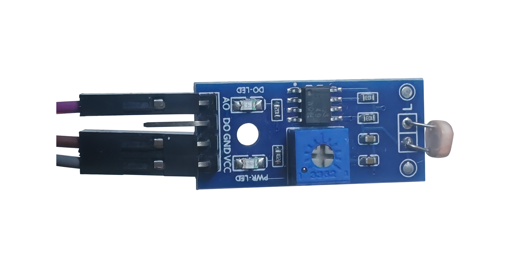

The left button and the tab group header can adjust the current column.
Click the button in the upper left corner of the interface to view the App functions, the reference materials used by the author when making the App, and the author's school email.
The functions of the button in the upper right corner of the interface are as follows:
1. Import images (for the Image FFT column);
2. Import audio (for the Audio FFT and Real-time Audio Game columns);
3. View Arduino program code and open Arduino program (for the Arduino Sound Signal Processing and Arduino Light Signal Processing columns);
4. Language switching, you can switch between Chinese and English;
5. Python interface, you can choose the Python interpreter on the PC.
The related theories of Fast Fourier Transform are introduced in detail, including historical origin, Fourier series, Fourier transform, discrete Fourier transform and Fast Fourier transform.
On the left are the phase spectrum, time domain diagram, frequency domain diagram, and three-dimensional frequency domain diagram of the Fourier transform of the square wave. The number of harmonics can be increased by sliding the slider (0-100).
In the lower left corner is a real-time interactive html document for Fourier transform of hand-drawn closed curves. Click the button to enter and view it.
In the upper right corner is the waveform description of the Fourier transform, and in the lower right corner is the application of Fourier transform on jpeg files.
There are two ways to apply FFT to images:
Method 1: Based on C++, extract the outline of jpg/png/bmp images and provide dynamic display of Fourier circles, press F5 to start drawing (it is recommended that the imported image should not be too complex);
Method 2: Based on Python (need PC with Python interpreter or click the upper link to enter the Python official website to download), extract the hard edge or single path svg of jpg/png, perform fast Fourier transform on the path, and render the image through the processing program (unzip the processing installation package or the processing program on the PC in the lower right corner). There are 5 related parameters on the right. After filling in or selecting, click the dynamic display button to perform Python program calculation and processing rendering. Click the start button in the upper left corner of the processing program to draw.
Click the import song button to display the imported songs in the list box in the upper left corner. Click Play, Pause, Resume, Stop, Previous, Next and Adjust Progress Bar to adjust the song playback status. Select the Local or Global radio button option to draw a local or global waveform and spectrum in the middle coordinate area.
The two buttons below can be used to enhance human voice based on Fast Fourier Transform and view related principles.
On the right is the harmonic structure analysis of musical instruments. Select an instrument and click the instrument play button on the left to play a piece of pure music played by the instrument and display the harmonic structure image. Click the Stop button to stop the instrument from playing.
First check the circuit diagram to connect the Arduino Uno circuit (Note: the SIG ports of the sound sensor and light sensor in the figure correspond to the AO ports in the real object). The program will automatically find the PC port available for connection. Note that the port connected to the Arduino in the PC device manager. Click the Arduino icon in the upper right corner of the main interface to view the Arduino program and upload it to the Arduino Uno development board. Click the Execute Bat button. After selecting the port, click the Connect button. Click the Start button at the bottom to start collecting Arduino signals. (Due to the limitations of hardware and MATLAB processing capabilities, the actual processing effect will be delayed.) The program will display the dynamic images of waveforms, spectra and silence detection through fast Fourier transform, and dynamically update the parameter table. Click the End button to stop collecting signals.
Click the Export Silence Filter button to get the audio after filtering out silence. Click the Play and Stop buttons to control the playback.
The right side is the voice change processing column. You can choose to use Arduino or PC microphone for FFT-based voice change processing. If you choose a microphone, you must first use the Start and End buttons to record. Click the Play and Stop buttons in the lower right corner to control the playback of the voice-changed audio. The original and processed waveforms will be displayed during playback.
Note: The mute threshold in the Arduino code is 560. The sound intensity signal is different depending on the capacitance of the sound sensor. The larger the capacitance, the greater the sound intensity signal and the more sensitive the detection. The capacitance of the sound sensor can be adjusted by the screw as shown in the figure. Please adjust it manually before use to make the mute threshold close to 560.

Arduino connection method for simultaneous sound signal processing. Click the Start and End buttons to control the collection of optical signals. The parameter table on the right will be updated in real time, and the light intensity signal and spectrum energy distribution image will be displayed in the middle coordinate area. The photosensor is shown in the figure below.
Songs can be imported on the left side and FFT analysis can be performed. The analysis results are displayed on the lower left image. According to the prompts of the keyboard buttons corresponding to the musical notation notes in the text area, you can play the music game after clicking the start button. Click the play button to play the original music. Click the end button to end the music playback and music game. The score label can display the current score in real time. The volume can be adjusted in the lower right corner.
Interactive practice on the html component, a total of 10 questions, click to verify the answer to feedback the correctness.
Select the file to be exported in the number check box, click the export data button, and select the export folder to complete the export.